KPMG Sponsored Interactive Design & Computer Information Systems Capstone Competition
This project was part of a class for an advanced study in converged media production. It was a senior production studio class focusing on creative solutions for complex communication problems in print, video, and web media. This class involved a client-based agile project for website improvement requiring creative brainstorming, teamwork, project management, and analysis and criticism in addition to production and distribution.
We helped Madison Connect Hub to create a website that increased efficiency, usability, and improved collaboration for research among students and faculty. We extended the functionality to improve the website to provide a better user experience. For example, we incorporated a way to search by skills, have a user messaging system, and see teammates' availability to make scheduling easier.
We developed this site using C# and HTML, and consistently incorporateed user testing and UX/UI principles into our development. We made the site visually appealing by following a created style guide and branding. We ensured our project met expectations by meeting with the client throughout the project and using all input to improve the interface. The end goal was to develop a website that easily allows students and professors to collaborate on projects. Our team's goal was to make the website more accessible and allow each user to collaborate on projects much easier and more efficiently than ever.
Team E.T.A.
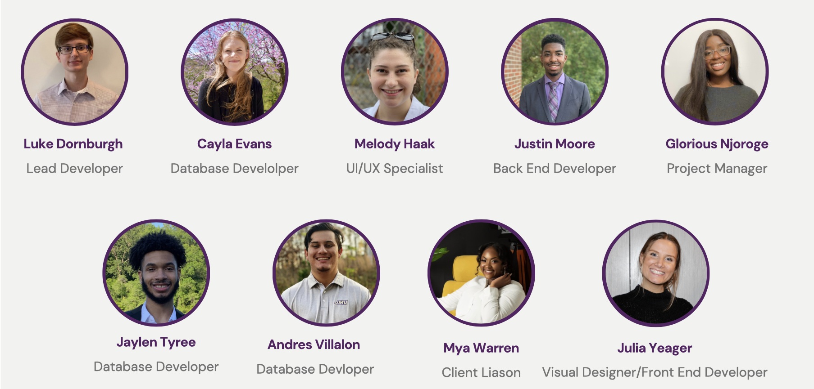
The Design Problem
How can we improve the expereince for students and faculty to collabroate easily on projects that they make?
Previous System
Madison Connect Hub is a site that allows students and faculty to create newfound connections based on similar interests in research and projects. The Hub is looking for a "redesign" that elevates it's current features and implements new ideas, such as: creating a more dynamic home page, implementing email notifications, allowing users/teams to make evaluations, integrating document upload capabilities, and problem-solving topic search by keyword pain points.
After prototyping, I began to code the pages through HTML/CSS with the help of Bootstrap5 and JavaScript. After coding, I worked with a delveloper to work the code into the appropriate C# code. Below are images of the final site, coded and functional.
System Walkthrough
Redesiged Site
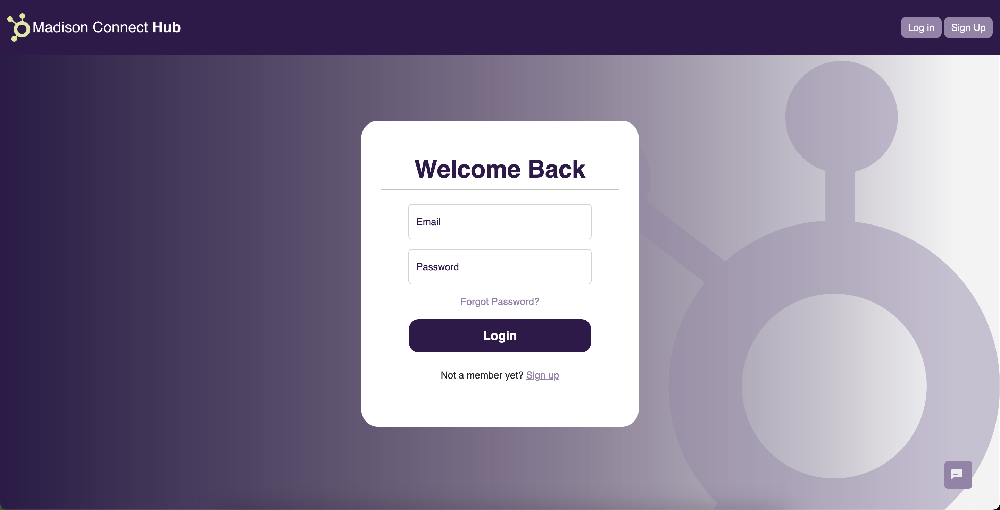
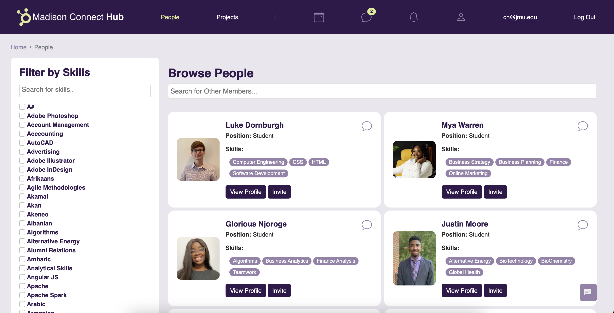
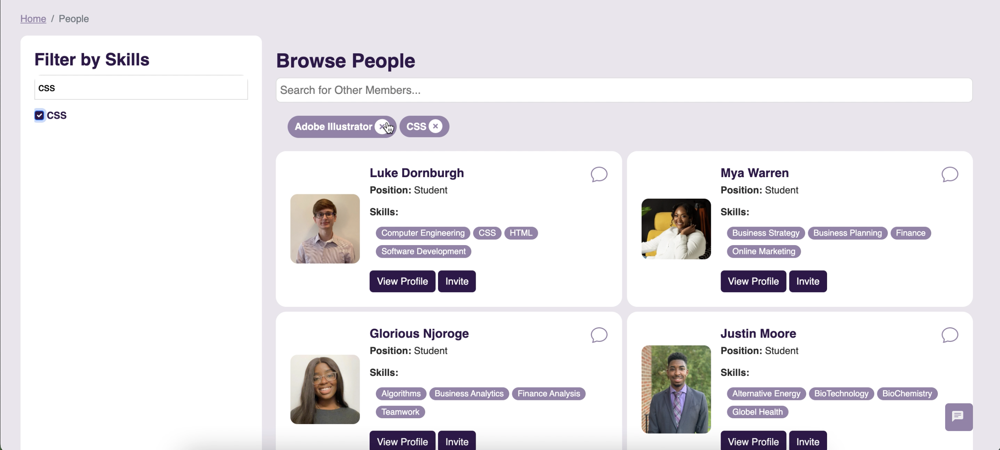
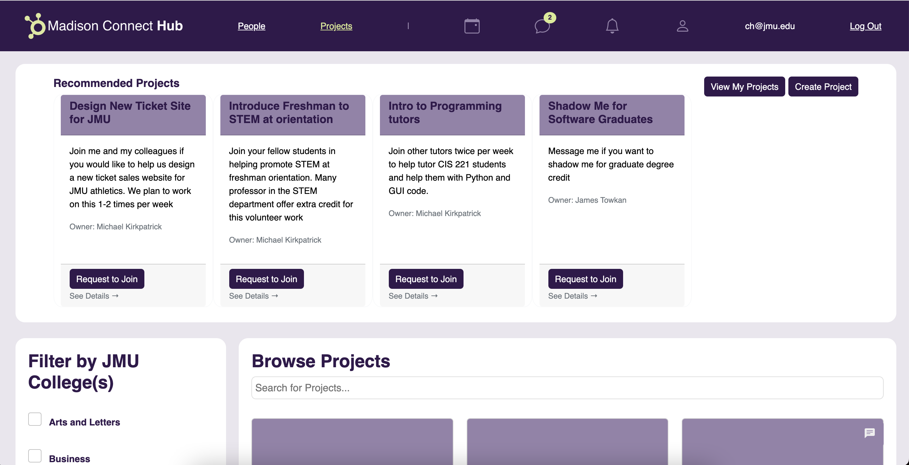
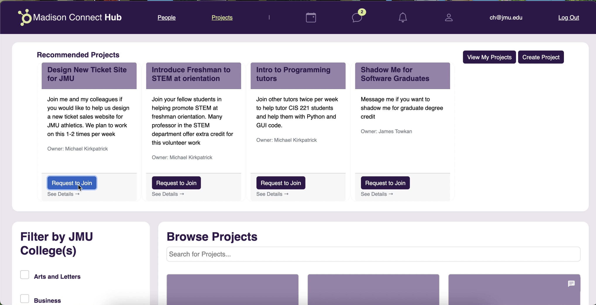
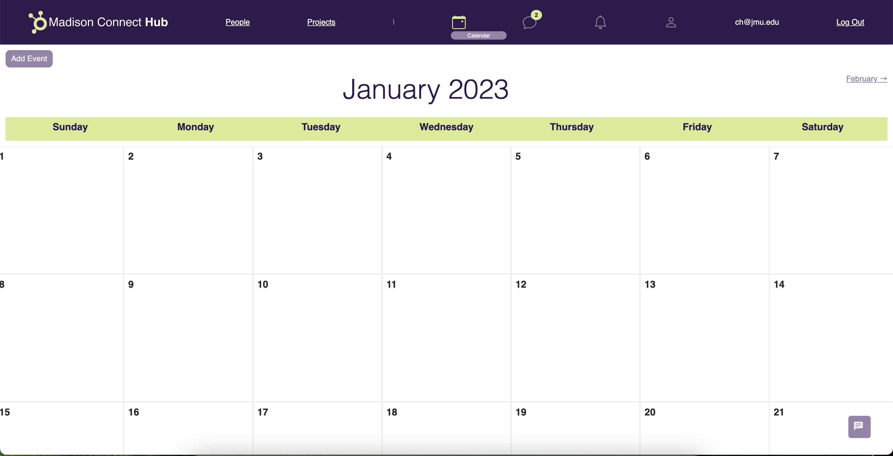
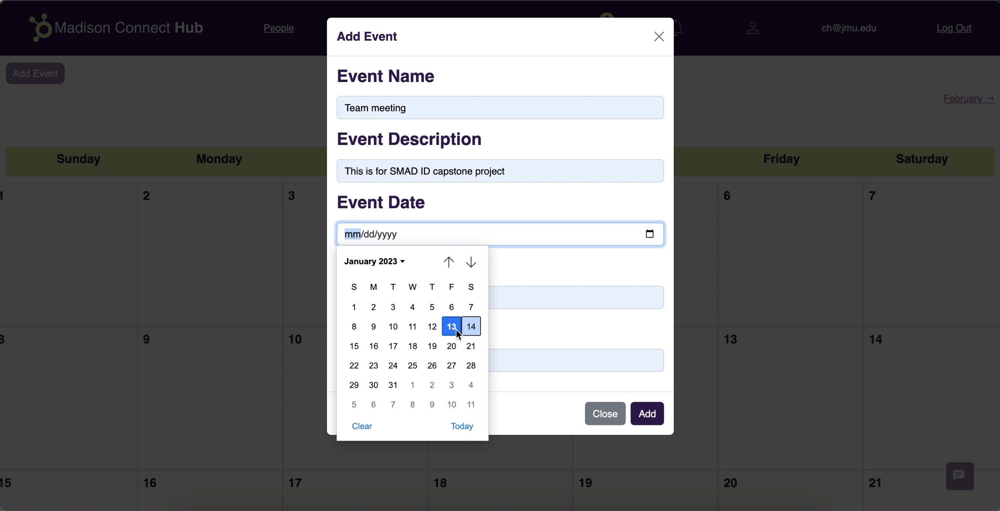
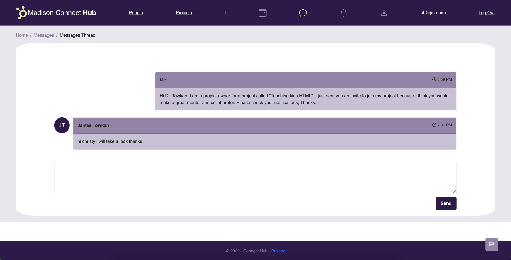
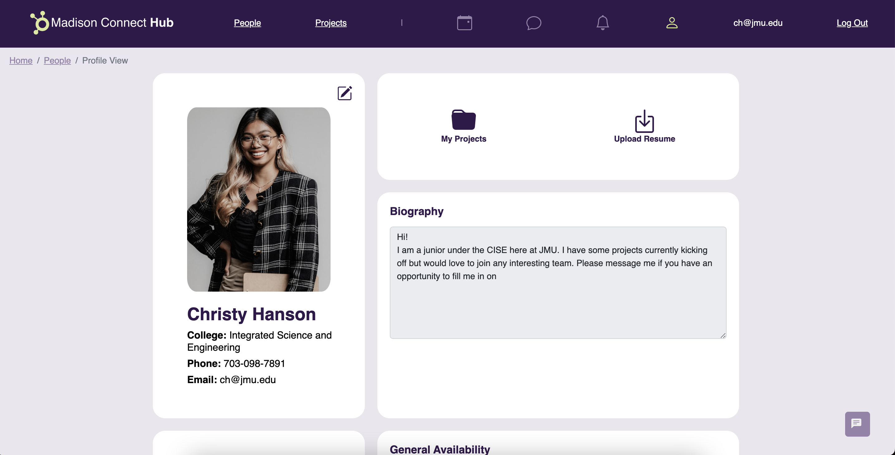
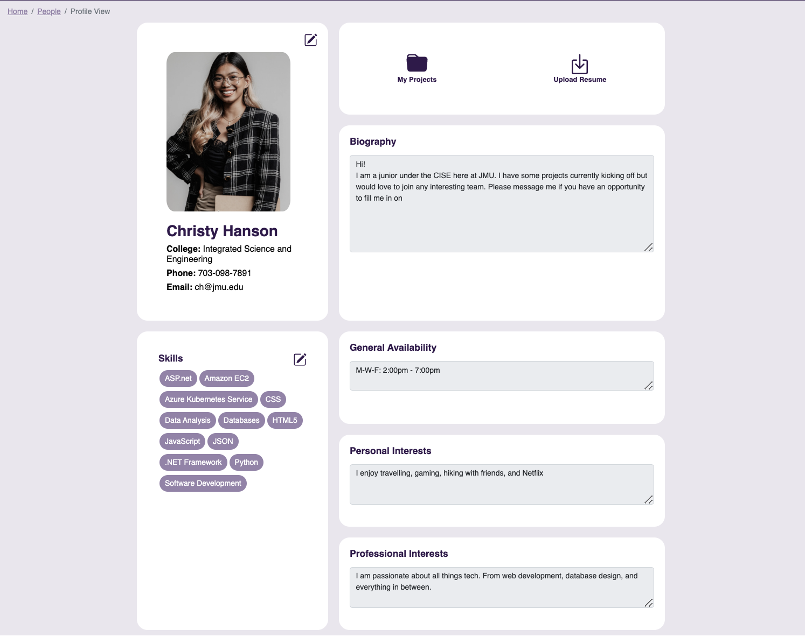
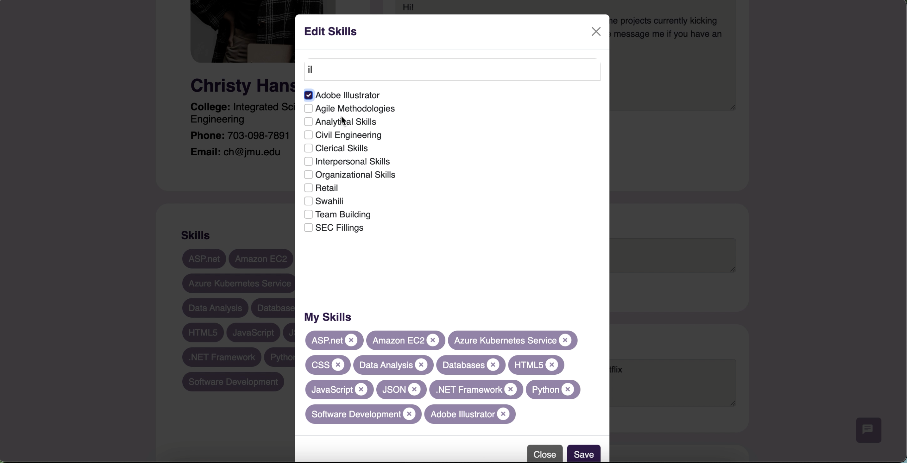
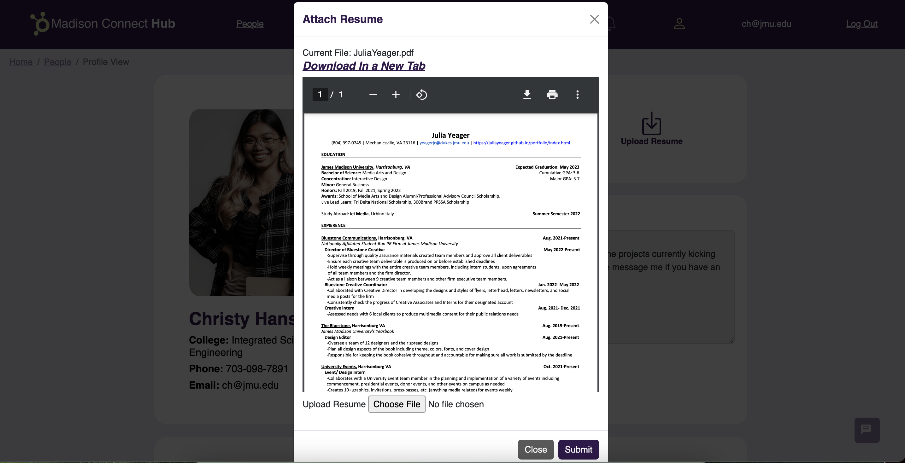
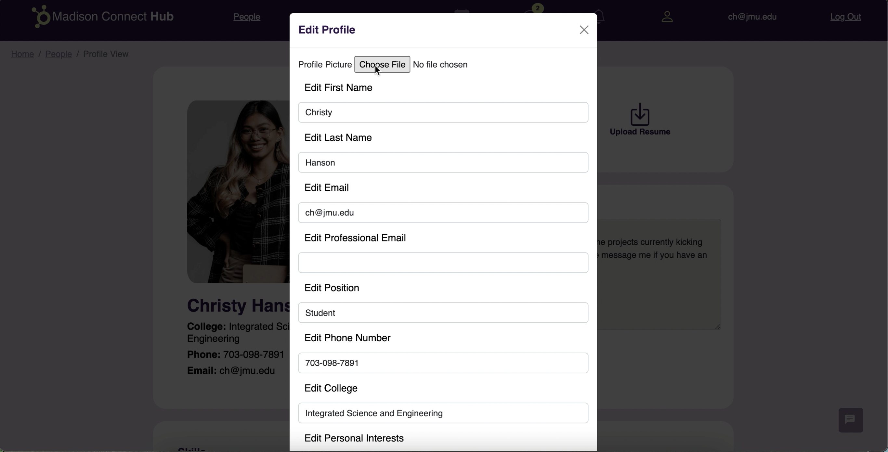
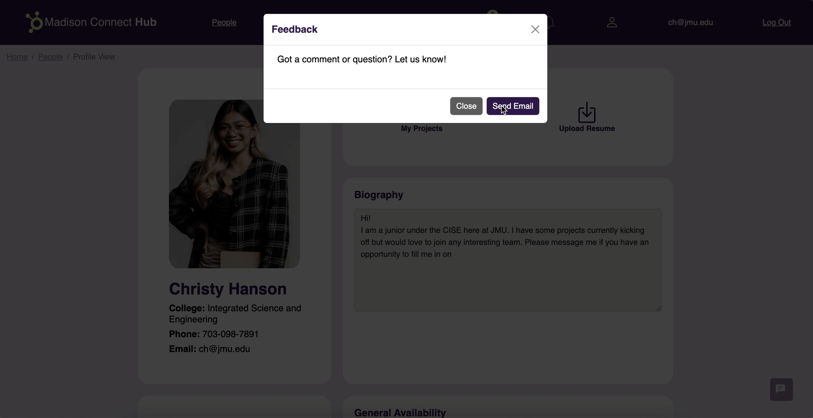
Usability Testing
After coding, we conducted a system usablility test. In our prototype, our System Usability Score (SUS) was a 70.3. Our final SUS score at the end of the project, our score was an 87.8.